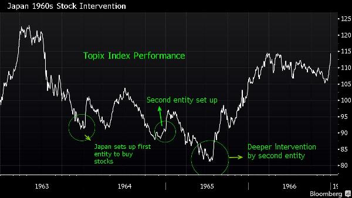
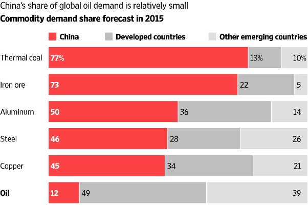

2015-09-08 18:15:00
最近幾個月，由於股市震盪，中國經濟發展的不確定性大幅提高，油價的持續疲軟也有全球性的影響，我在前文《世界未來經濟走向》雖然談到這些話題，但是沒有針對性地討論其細節，所以在此補充幾個觀點。
中共當局在股市上所犯的基本錯誤是一方面沒有對不勞而獲的資本利得課徵適當的稅率，另一方面又沒有對內線交易做懲處的傳統，所以在本身也天真地以為可以靠股市不勞而獲時（亦即以為不動用國家資本、不設立新機構和新規則，就可以吸收游資，避免向國外流失），就等於安排全國的小戶一起讓內線洗劫一空。在這個情形下，最糟糕的反應是堅持美國的自由主義教條（亦即美國人說的那一套，而不是他們自己做的那一套；在2008年金融危機後，美國政府的實際反應是投入將近8000億美金的政府資金，直接用來挽救銀行和其他大企業），繼續放任股市波動，那麼連非內線的對沖基金和金融公司主管也將能大肆縱橫這個殺戮戰場。還好他們至少沒有落入這個陷阱，否則不但大量資金會被掠奪，實體經濟也會受股市崩盤的打擊而陷入恐慌。
長期來看，中共必須對資本利得和內線交易做出反制，否則定期的大失血在所難免。然而短期內由國有資本來支撐股市會是什麼樣的過程呢？英美的媒體普遍詛咒討伐，認為是搬石砸腳，不但必然徒勞無功，而且會造成更大的損失。但是最近Bloomberg發表了一篇與眾不同的文章（參見http://www.bloomberg.com/news/articles/2015-09-06/china-s-turmoil-could-be-just-a-blip-if-1960s-japan-is-a-guide；Bloomberg和紐約時報的駐中國記者群並列為最專注於負面報導的西方媒體；這篇相當專業的文章並不是他們寫的，兩名作者的駐地分別是香港和東京），贊同國資救市，其分析頗為中肯，值得介紹。
他們的論述主要基於一個重要的觀察：當前中國經濟的人均資本存量（Capital Stock，亦即累積的財富，主要體現在基礎設施、工商業和人民的固定財產；採取相對美國的比值來做正規化Normalization）與日本相比，類似的是後者的1960年代中期，而不是1980年代末期。國資挽救股市的成敗，最重要的因素在於整體經濟的前景；既然中國經濟類似1960年代的日本而不是1980年代的日本，那麼就不能用日本政府在1990年挽救股市的失敗來斷言中國的未來。剛好日本在1963年七月也經歷過一次股市泡沫爆裂，而日本政府的反應與今日的中共當局一模一樣，由中央銀行組織了兩個金融機構的聯盟，進行了三次大規模的救市，終於遏止了股票的頹勢，使市場回歸穩定。日本中央銀行投入的資金得以獲利完全回收，這個熊市也只成為日本經濟奇蹟過程中的一個小插曲。

日本政府等了6個月才出手救市，其後12個月和18個月又各進場了一次，總共花了 4275億日元，相當於1964年日本GDP的3.2%。東證股價指數（Topix）從1963年七月的122點落到1965年七月的82點，跌幅為33%，其後迅速回升，重入牛市。上海股市自今年六月的5100點跌至目前的3200點，跌幅為37%；中共當局的救市比日本快、狠、強，應該不需要兩年來穩定市場，不過直接和間接總花費或許仍會接近GDP的3.2%，相當於2.3兆人民幣。
在油價方面，十個月前我提到很多頁岩油田的生產成本在$50-80一桶，所以油價一但跌到這個範圍，就會開始逼迫頁岩油開採商減產。實際上發生的是美國的頁岩油商用了很多緊急的成本節約手段，使油價一路跌破$60一桶才嚴重地影響他們的財務，結果是減產的過程被遲滯，於是油價得以衝到目前的$50左右一桶。這些頁岩油商大部分是靠高利貸（High-Yield Bond）支持的小公司，在未來這一年會倒下一片，到2016年底或2017年初原油市場應該會慢慢回歸供需平衡，屆時油價才可能得到溫和上漲的動力。

這是2015年世界大宗商品消費額份圖。紅色是中國，深灰是已開發國家，淺灰是中國以外的開發中國家。由上至下分別是發電用煤、鐵礦、鋁、鋼、銅和原油。很明顯的，中國在原油消費所佔的比率很小，甚至低於全球平均，所以中國的經濟轉型對原油價格的下跌是一個十分次要的因素。
原油在未來對中國最大的意義在於定價權，因為這是削弱美元霸權的關鍵步驟（參見前文《美元的金融霸權》）。最新的傳言號稱上海國際能源交易所（Shanghai International Energy Exchange）將在下個月開辦以人民幣定價的原油期貨合約。目前國際上的兩個主要原油期貨（北海的Brent和西德州WTI）都是以美元定價；我雖然一直知道中共急於打擊美元的國際儲備貨幣地位，而爭奪原油的定價權是極重要的手段，但是卻沒有料到中方會動手得這麼快。前幾個月中共開始允許個別煉油廠跳過中石油和中石化而直接向國外購買原油，現在看來顯然是在為這個新原油期貨合約做準備。如果這個合約受到產油國的重視，美元的Götterdämmerung（諸神的黃昏，這是德文，華格納所寫《尼伯龍根的指環》四部曲中的最後一部）將指日可待。